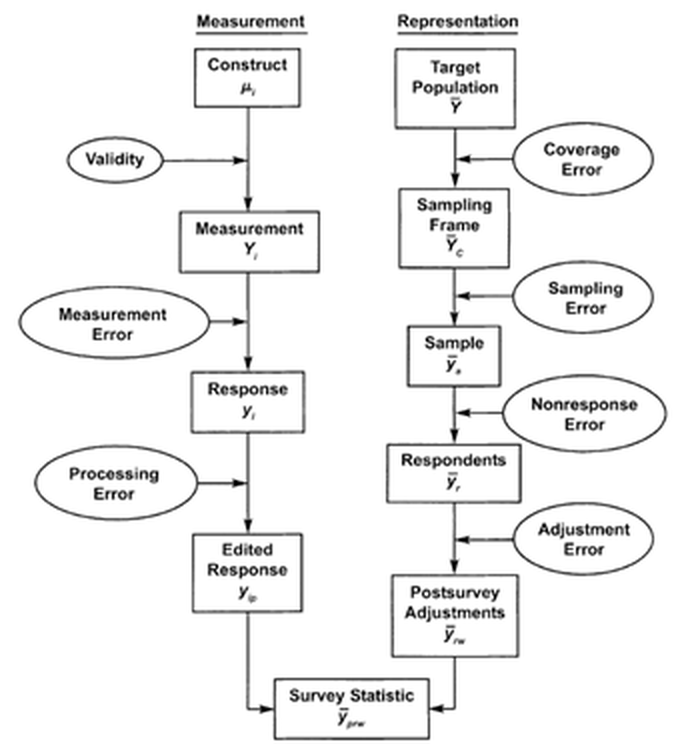
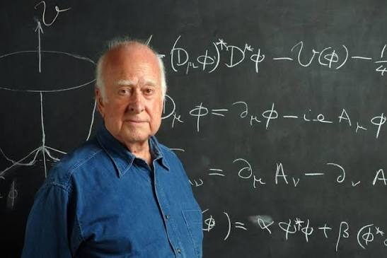
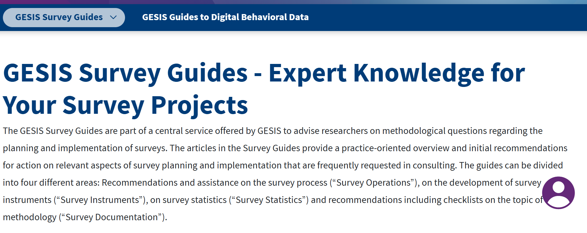

Encuestas, cuestionarios y medición
Del concepto al número: trabajar con el error
Alejandro Plaza Reveco · profesor invitado Lógica de la Investigación Social · Sociología, Universidad Diego Portales
6 de octubre de 2026
Lo básico: qué es medir, qué es una variable y qué es un cuestionario
Definición clásica Medir es asignar números a objetos o eventos según reglas (Stevens, 1946)
Definición Una variable es una característica que toma distintos valores entre las unidades que estudiamos: personas, hogares, comunas…
| Persona | Comuna | Nivel educacional | Confianza (1–5) | Edad |
|---|---|---|---|---|
| Ana | Maipú | Media completa | 2 | 34 |
| Benito | Ñuñoa | Universitaria | 4 | 51 |
| Carla | Temuco | Básica | 3 | 67 |
| Diego | Antofagasta | Técnica superior | 1 | 22 |
| Nivel | Qué nos dicen los valores | Ejemplos | Operaciones |
|---|---|---|---|
| Nominal | Solo categorías distintas, sin orden | Comuna, partido, sexo | Contar |
| Ordinal | Categorías con orden, pero distancias desconocidas | Nivel educacional, escala de acuerdo | Contar, ordenar |
| Continua | Distancias iguales: un año más es siempre un año más | Edad en años, ingreso, horas de trabajo | Contar, ordenar, sumar, promediar |
Ojo El número que ponemos en la base no cambia el nivel de medición: codificar «Norte = 1, Centro = 2, Sur = 3» no convierte la zona en una variable numérica.
«¿Cuánto confía usted en el Congreso?»
Para pensar Un promedio de confianza de 2,4: ¿qué significa exactamente?
Hagan clic en cada tarjeta para ver la respuesta
Una decisión de diseño: la misma variable puede medirse a distintos niveles. Preguntar la edad en tramos pierde información.
Definición «Un cuestionario es un dispositivo de investigación cuantitativa consistente en un conjunto de preguntas que deben ser aplicadas a un sujeto (usualmente individual) en un orden determinado y frente a las cuales este sujeto puede responder adecuando sus respuestas a un espacio restringido o a una serie de respuestas que el mismo cuestionario ofrece.»
Asún (2006, p. 67).
Hechos Conductas o sucesos
¿Votó en la última elección? ¿Con quién vive?
Conocimientos y habilidades Hay respuestas correctas e incorrectas
Pruebas SIMCE o PAES, preguntas de conocimiento político
Opiniones y valores Lo que la persona piensa o siente
¿Cuánto confía en el Congreso? ¿Qué es más importante: libertad o igualdad?
Incluso los hechos pasan por la persona Lo que recibimos «no es el hecho», sino «la percepción, recuerdo o lo que nos desea transmitir el sujeto» (Asún, 2006, p. 78).
Nos vamos a equivocar. La pregunta es: ¿por cuánto?
Trabajar con datos cuantitativos significa
obsesionarse con el error
Marzo de 2026: el debate sobre el MEPCO (Mecanismo de Estabilización de Precios de los Combustibles)
Mirada determinista «El 48% de los chilenos opina que el Gobierno debía endeudarse para mantener el subsidio del MEPCO»
Mirada probabilística «Entre 44% y 52% lo opina, con 95% de confianza»
Ilustrativo: muestra de ≈700 casos, margen de ±3,7 puntos
Dato: Cadem, Plaza Pública (marzo 2026).
Cada línea es una encuesta distinta. Verde: el intervalo contiene el valor verdadero. Rojo: no lo contiene.
«Medir conceptos de ciencias sociales siempre incorpora un grado variable, pero frecuentemente importante, de error. Equivale a tratar de comprender una conversación escuchada en una radio con mucha estática y ruido de fondo.»
Asún (2006, p. 112)
La cruz marca el promedio de los disparos. Con más disparos, el error aleatorio se compensa; el sesgo, no.
Grafo dirigido acíclico Un dibujo de qué produce qué
La lluvia produce paraguas abiertos y calles mojadas. Paraguas y calles mojadas andan juntos, aunque uno no cause al otro.
Convención de colores en esta clase:
Pearl y Mackenzie (2018), The Book of Why.
X = V + E
Teoría clásica de los tests: toda respuesta es verdad más ruido
Ejemplo en Asún (2006, p. 103).
Historia 1: la gente no dice la verdad
Declarar haber votado por el ganador «queda bien»: es un error de medición
Historia 2: responde otra gente
Quienes votaron (y por el ganador) aceptan más responder: es un error de representación
La lección El mismo número equivocado puede venir de fuentes distintas. En EE.UU., buena parte de la sobreestimación de la participación se explica por la historia 2 (Jackman y Spahn, 2019).

Groves et al. (2009), Survey Methodology, cap. 2.
Los errores se acumulan: el estadístico final los hereda todos. El margen de error que publica la prensa mide solo el error muestral.
¿Qué piensan los chilenos sobre el MEPCO? (marzo–abril de 2026)
| Encuesta | Lo que se preguntó (en síntesis) | Resultado |
|---|---|---|
| Cadem, Plaza Pública | El Gobierno debía endeudarse para mantener el subsidio | 48% de acuerdo |
| Pulso Ciudadano | Rechazo a la decisión de no aplicar el mecanismo | 57,2% rechaza |
| Métrica Pública | Rechazo a la eliminación o suspensión del MEPCO | 65,5% rechaza |
Para discutir ¿Estas encuestas se contradicen? ¿O cada una mide una cosa distinta: el endeudamiento, una decisión del Gobierno, la existencia del mecanismo?
Cifras según reportes de prensa; verificar en los informes originales de cada encuesta.
Conceptos latentes y operacionalización
el amor la inteligencia la confianza en los demás
el autoritarismo la depresión la eficacia política
Asún (2006, p. 69) (a) Definir cuidadosamente un concepto no observable; (b) derivar consecuencias observables, los indicadores; (c) medir los indicadores; (d) deducir de ellos el grado en que el objeto posee el concepto.
Un ejemplo de otras ciencias

En sociología Hay una fase teórica (qué es el concepto) y una fase empírica (cómo se traduce en números). La operacionalización es el puente.
Concepto → dimensiones → preguntas → categorías de respuesta → índice o escala
Adaptado de Asún (2006, p. 75).
Concepto simple Las personas lo usan en su vida cotidiana igual que el investigador
«¿Cuántos años tiene?» · «¿Se siente enamorado de su pareja actual?»
Concepto complejo El habla cotidiana no lo usa, o lo usa distinto
No podemos preguntar «¿cuán individuado está usted?»
Asún (2006, pp. 71–73).
| Dimensión | Pregunta |
|---|---|
| Disposición a romper normas sociales | ¿Seguiría adelante con una idea aunque vaya en contra de la opinión de sus padres? ¿De su pareja? ¿De la Iglesia? |
| Deberes morales que restringen la conducta | ¿Cómo le gustaría ser recordado? (a) alguien que se entregó a los demás; (b) alguien que salió adelante contra viento y marea; (c) alguien fiel a sus sueños; (d) alguien que cumplió su deber |
| Biografía como decisión personal | ¿Cuál frase lo representa mejor? (a) Yo analizo mi vida y veo qué hacer; (b) En la vida uno tiene que hacer lo que hay que hacer |
Un punto por cada respuesta «individualizada» ⇒ índice de 0 a 5
Ejemplo desarrollado en Asún (2006, pp. 73–75).
«El proceso de operacionalización siempre implica un grado de distorsión o mutilación del sentido teórico de un concepto. […] Nunca logramos medir totalmente el concepto que buscamos, sólo obtenemos mejores o peores interpretaciones empíricas.»
Asún (2006, p. 77)
Pregunta al curso ¿Las cinco preguntas del PNUD capturan todo lo que un sociólogo entiende por «individuación»? ¿Qué quedó fuera?
Asún (2006, p. 91) Si en una prueba de 60 preguntas un alumno capaz se confunde con una, su puntaje total igual reflejará su conocimiento.
Cada punto es una persona. Eje horizontal: su valor verdadero (que en la realidad nunca vemos). Eje vertical: el promedio de sus respuestas. Cada pregunta trae su propio error; al promediar varias, los errores se compensan.
Confiabilidad ¿El instrumento entrega el mismo resultado si lo aplicamos dos veces a alguien que no ha cambiado?
Una regla que hoy dice 15 cm y en cinco minutos dice 20 cm no sirve
Validez ¿El instrumento mide lo que dice medir?
Si digo que mido autoritarismo, que sea autoritarismo y no otra cosa
Vuelvan al tiro al blanco: un instrumento preciso pero sesgado es confiable pero no válido. Siempre mide lo mismo… pero no lo que queríamos.
Asún (2006, pp. 101–102).
Reflectivo
El concepto causa las respuestas: si alguien es autoritario, tenderá a estar de acuerdo con todos los ítems. Los ítems deben correlacionar.
Formativo
Los indicadores componen el concepto: una casa puede tener buen material y mal entorno. No tienen por qué correlacionar.
¿Por qué importa? En un modelo formativo, eliminar el indicador «que no correlaciona» significa amputar una parte del concepto.
Tourangeau, Rips y Rasinski (2000).
En parejas, 2 minutos. Después, clic en cada tarjeta para ver el problema y una mejor versión
Lenzner y Menold (2016), GESIS Survey Guidelines: Question Wording; Asún (2006, pp. 80–90).
Una ley que no existía En EE.UU. se preguntó si había que derogar la Public Affairs Act of 1975, una ley inventada. Cerca de un tercio dio su opinión igual.
Implicancias
Bishop, Oldendick, Tuchfarber y Bennett (1980), Public Opinion Quarterly, 44(2).
Autoeficacia política · autoritarismo · depresión
El Listado de Variables de ELSOC documenta, para cada ítem, su concepto y su pregunta:
| Código | Concepto general | Concepto específico | Fraseo del ítem | Tipo |
|---|---|---|---|---|
c10_02 |
Autoeficacia política | Autoeficacia política | Mi voto influye en el resultado de la elección | Ordinal |
c18_06 |
Autoritarismo | Autoritarismo 1 | La obediencia y el respeto por la autoridad son los valores más importantes que los niños debieran aprender | Ordinal |
s11_02 |
Estado de ánimo | Sintomatología depresiva | Decaimiento, pesadez o desesperanza | Ordinal |
Concepto → dimensión → pregunta → categorías: el diagrama de Asún, hecho planilla
ELSOC, Listado de Variables Global v2023.
Campbell, Gurin y Miller (1954); Niemi, Craig y Mattei (1991).
«¿En qué medida se encuentra usted de acuerdo o en desacuerdo con cada una de las siguientes afirmaciones?»
| Código | Ítem |
|---|---|
c10_01 |
Votar es mi deber como ciudadano |
c10_02 |
Mi voto influye en el resultado de la elección |
c10_03 |
Votar permite expresar mis ideas |
Totalmente en desacuerdo — En desacuerdo — Ni de acuerdo ni en desacuerdo — De acuerdo — Totalmente de acuerdo
Pregunta al curso ¿Qué faceta de la relación con el voto captura cada ítem?
Lo que permite una buena documentación
Ejemplo Si me interesa la eficacia externa, c10_02 es mi mejor candidato; si me interesa la cultura cívica, c10_01.
La lección La etiqueta de una variable es un punto de partida, no una garantía. La validez se juzga en relación con la pregunta de investigación de quien usa los datos.
Que ELSOC publique el concepto, el fraseo y las olas de cada ítem es justamente lo que hace posible esta discusión.
Medir no es solo un problema técnico Cómo medimos la eficacia define qué podemos decir sobre un mecanismo de la desigualdad.
«¿En qué medida se encuentra usted de acuerdo o en desacuerdo con cada una de las siguientes afirmaciones?»
| Código | Ítem |
|---|---|
c18_04 |
En vez de tanta preocupación por los derechos de las personas, lo que este país necesita es un gobierno firme |
c18_05 |
Lo que nuestro país necesita es un mandatario/a fuerte con la determinación para llevarnos por el camino correcto |
c18_06 |
La obediencia y el respeto por la autoridad son los valores más importantes que los niños debieran aprender |
c18_07 |
Las verdaderas claves para tener una buena vida son la obediencia y la disciplina |
Miren con atención ¿Qué significa responder «de acuerdo» en las cuatro afirmaciones?
¿Por qué ocurre?
Consecuencia Una persona aquiescente puede aparecer como más autoritaria de lo que es: un error sistemático.
Bogner y Landrock (2016), GESIS Survey Guidelines: Response Biases in Standardised Surveys, sección 2.2.
Simulación: 600 personas, con el mismo autoritarismo promedio en ambos grupos. Las personas con menos educación tienden a decir «de acuerdo» un poco más. La línea dorada es el promedio verdadero.
1. Escalas balanceadas Mitad de los ítems en un sentido y mitad en el otro: la aquiescencia se cancela
Ej.: escala RWA de Altemeyer
2. Categorías propias Reemplazar «de acuerdo / en desacuerdo» por alternativas del ítem
«¿Cuánto influye su voto?» Nada — Poco — Algo — Mucho
3. Medición indirecta Preguntar por otra cosa que revela el concepto
¿Qué es más importante que aprenda un niño: obediencia o independencia? (Feldman y Stenner, 1997)
«¿Cuántas veces durante las últimas dos semanas ha sentido alguna de las siguientes molestias?»
| Código | Síntoma |
|---|---|
s11_01 |
Poco interés o alegría para realizar sus actividades |
s11_02 |
Decaimiento, pesadez o desesperanza |
s11_03 |
Dificultad para dormir, o exceso de sueño |
s11_04 |
Cansancio o falta de energía |
s11_05 |
Apetito disminuido o aumentado |
s11_06 |
Dificultad para concentrarse |
s11_07 |
Mala opinión de sí mismo |
s11_08 |
Movimientos o lenguaje enlentecidos |
s11_09 |
Pensamientos de muerte o de hacerse daño |
PHQ-9
PHQ-9 original · 4 categorías 0 Nunca · 1 Varios días · 2 Más de la mitad de los días · 3 Casi todos los días
ELSOC · 5 categorías 1 Nunca · 2 Algunos días · 3 Más de la mitad de los días · 4 Casi todos los días · 5 Todos los días
Ambos empujan hacia abajo: subreporte
Bogner y Landrock (2016), secciones 2.1, 3.1 y 3.2.
s11_10 indica si la persona contestó directamente en la tabletAsún ya lo anticipaba (p. 108) Aumentar la confidencialidad «dejando que parte del instrumento lo responda secretamente (sin mediación del encuestador)».
Causa común
La depresión es una condición latente que produce los síntomas: sumarlos tiene sentido
Red de síntomas
Los síntomas se causan entre sí: la depresión es la red. Ojo: este dibujo no es un DAG, porque tiene un ciclo
La lección Incluso en instrumentos clínicos, ¿qué es el concepto? sigue siendo una pregunta abierta. Operacionalizar es tomar posición teórica.
Borsboom y Cramer (2013); Fried y Nesse (2015).
s11_09 pregunta por pensamientos de muerte o de hacerse daño| Caso | Pregunta | Fuente de error |
|---|---|---|
| Autoeficacia | ¿qué faceta mide cada ítem? | validez |
| Autoritarismo | ¿el formato empuja? | sesgo de respuesta |
| Depresión | ¿la situación empuja? | efecto encuestador y modo |
Experimentos, modos de aplicación y datos vinculados
El azar corta la flecha entre las características de las personas y la versión que reciben
Mutz (2011), Population-Based Survey Experiments.
Prohibir vs. permitir (Rugg, 1941) «¿Debería EE.UU. prohibir los discursos públicos contra la democracia?» → 54% sí
«¿Debería permitir…?» → 75% no
Misma idea, 21 puntos de diferencia
Rangos de respuesta (Schwarz et al., 1985) Horas diarias de televisión:
Rangos bajos → 16% dice más de 2½ horas
Rangos altos → 38% dice más de 2½ horas
Las alternativas sugieren qué es «normal»
| Diseño | En qué consiste | Sirve para |
|---|---|---|
| Split-ballot | Dos redacciones de la misma pregunta | Efectos de fraseo, orden, escalas |
| Viñetas | Historias breves con atributos que varían (sexo, clase, nacionalidad…) | Juicios de justicia, discriminación, merecimiento |
| Conjoint | Elegir entre perfiles que combinan varios atributos | Preferencias por candidatos, políticas, inmigrantes |
| Lista | Contar cuántas afirmaciones de una lista son ciertas; un grupo tiene una extra, sensible | Temas sensibles: compra de votos, discriminación |
Auspurg y Hinz (2015); Hainmueller, Hopkins y Yamamoto (2014); Blair e Imai (2012).
| Candidatura A | Candidatura B | |
|---|---|---|
| Manos alzadas |
Después de 3 rondas aparecen los resultados.
Caso chileno: CASEN 2020 Por la pandemia, se aplicó mayoritariamente por teléfono, con un cuestionario reducido. El Ministerio advirtió cautela al comparar con años anteriores.
La tablet de ELSOC es un cambio de modo dentro de la misma entrevista
de Leeuw (2005); Kreuter, Presser y Tourangeau (2008).
Pregunta m66_01 (cuestionario 2022) «Con el objetivo de potenciar el desarrollo de estudios y políticas públicas basadas en evidencia […] queremos consultarle sobre la posibilidad de contar con su RUT, de manera de poder vincular sus respuestas en esta encuesta con datos administrativos […] ¿Compartiría usted su RUT para fines de este estudio?»
La pregunta recuerda los protocolos de confidencialidad y la aprobación del comité de ética.
Condiciones éticas
Quienes aceptan vincular sus datos pueden ser distintos de quienes no: otra fuente de error de representación
ELSOC, cuestionario maestro 2022; Sakshaug y Kreuter (2012); Boeschoten et al. (2022).
Asún (2006, pp. 66–67, 98–100, 108–109).

Adorno, T. W., Frenkel-Brunswik, E., Levinson, D. y Sanford, N. (1950). The Authoritarian Personality. Harper.
Asún, R. (2006). Construcción de cuestionarios y escalas: el proceso de la producción de información cuantitativa. En M. Canales (Ed.), Metodologías de investigación social (pp. 63–114). LOM.
Auspurg, K. y Hinz, T. (2015). Factorial Survey Experiments. Sage.
Bishop, G., Oldendick, R., Tuchfarber, A. y Bennett, S. (1980). Pseudo-opinions on public affairs. Public Opinion Quarterly, 44(2), 198–209.
Blair, G. e Imai, K. (2012). Statistical analysis of list experiments. Political Analysis, 20(1), 47–77.
Boeschoten, L., Ausloos, J., Möller, J., Araujo, T. y Oberski, D. (2022). A framework for privacy preserving digital trace data collection through data donation. Computational Communication Research, 4(2), 388–423.
Bogner, K. y Landrock, U. (2016). Response Biases in Standardised Surveys. GESIS Survey Guidelines.
Bollen, K. y Lennox, R. (1991). Conventional wisdom on measurement: A structural equation perspective. Psychological Bulletin, 110(2), 305–314.
Borsboom, D. y Cramer, A. (2013). Network analysis: An integrative approach to the structure of psychopathology. Annual Review of Clinical Psychology, 9, 91–121.
Campbell, A., Gurin, G. y Miller, W. (1954). The Voter Decides. Row, Peterson.
de Leeuw, E. (2005). To mix or not to mix data collection modes in surveys. Journal of Official Statistics, 21(2), 233–255.
Feldman, S. y Stenner, K. (1997). Perceived threat and authoritarianism. Political Psychology, 18(4), 741–770.
Fried, E. y Nesse, R. (2015). Depression sum-scores don’t add up. BMC Medicine, 13, 72.
Groves, R., Fowler, F., Couper, M., Lepkowski, J., Singer, E. y Tourangeau, R. (2009). Survey Methodology (2.ª ed.). Wiley.
Hainmueller, J., Hopkins, D. y Yamamoto, T. (2014). Causal inference in conjoint analysis. Political Analysis, 22(1), 1–30.
Jackman, S. y Spahn, B. (2019). Why does the ANES overestimate voter turnout? Political Analysis, 27(2), 193–207.
Kreuter, F., Presser, S. y Tourangeau, R. (2008). Social desirability bias in CATI, IVR, and Web surveys. Public Opinion Quarterly, 72(5), 847–865.
Krosnick, J. (1991). Response strategies for coping with the cognitive demands of attitude measures in surveys. Applied Cognitive Psychology, 5(3), 213–236.
Lenzner, T. y Menold, N. (2016). Question Wording. GESIS Survey Guidelines.
Mutz, D. (2011). Population-Based Survey Experiments. Princeton University Press.
Niemi, R., Craig, S. y Mattei, F. (1991). Measuring internal political efficacy in the 1988 National Election Study. American Political Science Review, 85(4), 1407–1413.
Pearl, J. y Mackenzie, D. (2018). The Book of Why. Basic Books.
Rugg, D. (1941). Experiments in wording questions: II. Public Opinion Quarterly, 5(1), 91–92.
Sakshaug, J. y Kreuter, F. (2012). Assessing the magnitude of non-consent biases in linked survey and administrative data. Survey Research Methods, 6(2), 113–122.
Saris, W., Revilla, M., Krosnick, J. y Shaeffer, E. (2010). Comparing questions with agree/disagree response options to questions with item-specific response options. Survey Research Methods, 4(1), 61–79.
Schwarz, N., Hippler, H.-J., Deutsch, B. y Strack, F. (1985). Response scales: Effects of category range on reported behavior and comparative judgments. Public Opinion Quarterly, 49(3), 388–395.
Stevens, S. S. (1946). On the theory of scales of measurement. Science, 103(2684), 677–680.
Tourangeau, R., Rips, L. y Rasinski, K. (2000). The Psychology of Survey Response. Cambridge University Press.
Verba, S., Schlozman, K. y Brady, H. (1995). Voice and Equality: Civic Voluntarism in American Politics. Harvard University Press.
¡Gracias!
Encuestas, cuestionarios y medición
Alejandro Plaza Reveco aplazareveco@gmail.com
alejandroplazareveco.github.io